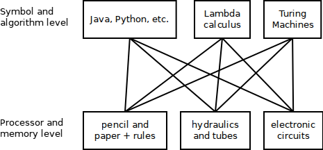
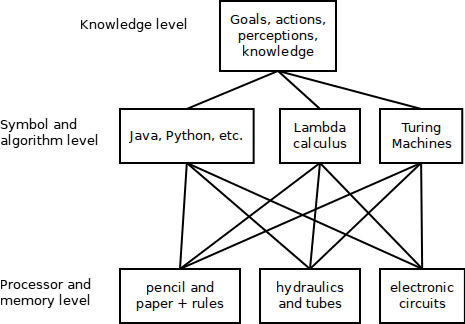

The knowledge level
For those new to the field of AI, the terminology may be somewhat abstract. We talk about “goals,” “actions,” “perceptions,” and “knowledge.” But what are these concepts? How do they work, where do they live?
New terminology is often a feature of a field of study; perhaps, terminology is partly what defines a field of study as separate from others. But the terminology is not just a way for a field to differentiate itself. The terminology is necessary to properly understand what is being studied.
In the philosophy of science, there is much interest in figuring out what constitutes an explanation. What is generally agreed upon is that an explanation should tell a “causal story” by including specifics about how various components effect each other. This causal story should enable one to imagine how different system configurations could cause different outcomes (i.e., the causal story should support a mental model). An explanation should be non-obvious and should hide irrelevant details. In short, an explanation should be at a certain “level” of description; not too high-level as to be completely vague, and not too low-level as to make the mental model, the causal story, so complex that alternative causal stories cannot be worked out in one’s mind.
Imagine trying to explain the role of a four-chambered heart while being restricted only to the concepts and terminology of molecular chemistry. The role of the heart, what it does for the animal, cannot possibly be described with such terminology.
Now, imagine trying to describe how to sort a list of integers (in software) by using only concepts and terminology about logic gates, resistors, capacitors, etc. While it could be done, the explanation of the sorting procedure would be extraordinarily complex and, frankly, completely unexplanatory.
Likewise, imagine trying to explain the Oedipus complex (from Freud) in terms of neurons and synaptic plasticity…
Explanations that are too “high level” are also worthless. We will not gain any understanding of the heart, how it works and why we have one, if we speak at the level of societies and nation-states (whose constituents all have hearts).
The point is that there are more-or-less natural levels of explanation. The heart is best explained in terms of its role in blood circulation and relation to other organs. How to sort a list of integers is best explained in terms of programming language constructs (such as lists, comparison operators, etc.). And the Oedipus complex is best explained in terms of the id/ego/superego and childhood experiences.
A hierarchy of levels
These levels of explanation form hierarchies. Here is a hierarchy for computer systems:

A feature of hierarchical levels is that each higher level may be implemented by any next-lower level. For example, the Java language (that is to say, the Java compiler and runtime environment) may be implemented on any computational device. All computational devices (pencil and paper plus a list of rules, or hydraulics and tubes, or artificial neural networks, or cellular automata, etc.) support the same computations. The symbol and algorithm level can be implemented on any device from the processor and memory level.
Additionally, a higher level such as Java or Turing machines is a specialization of the lower level. A lower level (say, electronic circuits) can have many more higher-level specializations than the ones listed. Electronic circuits can do much more than run Java code or carry out the operations of Turing machines.
Finally, each level can be defined independently of higher and lower levels. We can define exactly what electronic circuits are; it does not matter how they will be used (maybe to build a computer, maybe not), nor does it matter (mostly) how they are implemented (with transistors or vacuum tubes). Similarly, programmers rarely need to care, on a daily basis, about processors and memory. Unless the programmer is working on a low-level system program or a very high-performance program like a game, the details about computer hardware are irrelevant.
A new level
When we design and build AI systems, we find that explanations stuck at the symbol and algorithm level are too verbose. Usually, it makes no difference whether Java or Python or … is used to implement the systems we are designing. AI systems have something more; they require a higher level of description than descriptions like “how to sort a list of integers.”
In AI, we talk about “goals,” “actions,” “perceptions,” and “knowledge.” A goal is something the system (the agent) wants to accomplish. An action is something the agent can do (in order to change its environment). Perceptions are observations that the agent makes about its environment. And knowledge is consulted in order to choose the right actions, based on perceptions, in order to achieve goals.
Exactly how goals, actions, perceptions, and knowledge are implemented (realized in code) is not important if we are only describing what the goals, actions, perceptions, and knowledge are. Their descriptions, their explanations, exist in a level above the symbol and algorithm level. Allen Newell calls this level the “Knowledge level.”

We can explain how AI systems work using only the terminology from the knowledge level. This is what gives AI its own set of terminology, and partly what makes AI a separate field of study (separate from software engineering, for example).